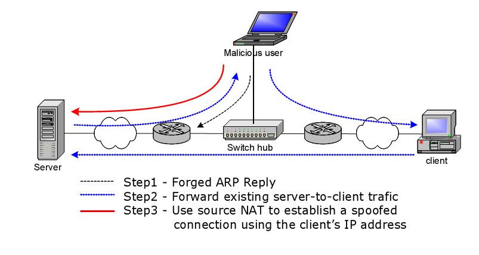

<!DOCTYPE html>
<html style="display: none;" lang="en">
    <head>
    <meta charset="utf-8">
    <!--
        © Material Theme
        https://github.com/viosey/hexo-theme-material
        Version: 1.5.0 -->
    <script>
        window.materialVersion = "1.5.0"
        // Delete localstorage with these tags
        window.oldVersion = [
            'codestartv1',
            '1.3.4',
            '1.4.0',
            '1.4.0b1'
        ]
    </script>

    <!-- dns prefetch -->
    <meta http-equiv="x-dns-prefetch-control" content="on">

    <link rel="dns-prefetch" href="https://cdn.jsdelivr.net/npm/hexo-material@1.4.0/source"/>


    <!-- Title -->
    
    <title>
        
            Linux Network Tools | 
        
        KING · NOTE
    </title>

    <!-- Meta & Info -->
    <meta http-equiv="X-UA-Compatible" content="IE=Edge,chrome=1">
    <meta name="viewport" content="width=device-width, initial-scale=1, user-scalable=no">
    <meta name="format-detection" content="telephone=no"/>
    <meta name="theme-color" content="#0097A7">
    <meta name="author" content="KING">
    <meta name="description" itemprop="description" content="Loneliness is the carnival of one single soul.">
    <meta name="keywords" content=",network,security,linux,natcat,nmap">

    <!-- Import lsloader -->
    <script>(function(){window.lsloader={jsRunSequence:[],jsnamemap:{},cssnamemap:{}};lsloader.removeLS=function(key){try{localStorage.removeItem(key)}catch(e){}};lsloader.setLS=function(key,val){try{localStorage.setItem(key,val)}catch(e){}};lsloader.getLS=function(key){var val="";try{val=localStorage.getItem(key)}catch(e){val=""}return val};versionString="/*"+(window.materialVersion||"unknownVersion")+"*/";lsloader.clean=function(){try{var keys=[];for(var i=0;i<localStorage.length;i++){keys.push(localStorage.key(i))}keys.forEach(function(key){var data=lsloader.getLS(key);if(window.oldVersion){var remove=window.oldVersion.reduce(function(p,c){return p||data.indexOf("/*"+c+"*/")!==-1},false);if(remove){lsloader.removeLS(key)}}})}catch(e){}};lsloader.clean();lsloader.load=function(jsname,jspath,cssonload,isJs){if(typeof cssonload==="boolean"){isJs=cssonload;cssonload=undefined}isJs=isJs||false;cssonload=cssonload||function(){};var code;code=this.getLS(jsname);if(code&&code.indexOf(versionString)===-1){this.removeLS(jsname);this.requestResource(jsname,jspath,cssonload,isJs);return}if(code){var versionNumber=code.split(versionString)[0];if(versionNumber!=jspath){console.log("reload:"+jspath);this.removeLS(jsname);this.requestResource(jsname,jspath,cssonload,isJs);return}code=code.split(versionString)[1];if(isJs){this.jsRunSequence.push({name:jsname,code:code});this.runjs(jspath,jsname,code)}else{document.getElementById(jsname).appendChild(document.createTextNode(code));cssonload()}}else{this.requestResource(jsname,jspath,cssonload,isJs)}};lsloader.requestResource=function(name,path,cssonload,isJs){var that=this;if(isJs){this.iojs(path,name,function(path,name,code){that.setLS(name,path+versionString+code);that.runjs(path,name,code)})}else{this.iocss(path,name,function(code){document.getElementById(name).appendChild(document.createTextNode(code));that.setLS(name,path+versionString+code)},cssonload)}};lsloader.iojs=function(path,jsname,callback){var that=this;that.jsRunSequence.push({name:jsname,code:""});try{var xhr=new XMLHttpRequest;xhr.open("get",path,true);xhr.onreadystatechange=function(){if(xhr.readyState==4){if(xhr.status>=200&&xhr.status<300||xhr.status==304){if(xhr.response!=""){callback(path,jsname,xhr.response);return}}that.jsfallback(path,jsname)}};xhr.send(null)}catch(e){that.jsfallback(path,jsname)}};lsloader.iocss=function(path,jsname,callback,cssonload){var that=this;try{var xhr=new XMLHttpRequest;xhr.open("get",path,true);xhr.onreadystatechange=function(){if(xhr.readyState==4){if(xhr.status>=200&&xhr.status<300||xhr.status==304){if(xhr.response!=""){callback(xhr.response);cssonload();return}}that.cssfallback(path,jsname,cssonload)}};xhr.send(null)}catch(e){that.cssfallback(path,jsname,cssonload)}};lsloader.iofonts=function(path,jsname,callback,cssonload){var that=this;try{var xhr=new XMLHttpRequest;xhr.open("get",path,true);xhr.onreadystatechange=function(){if(xhr.readyState==4){if(xhr.status>=200&&xhr.status<300||xhr.status==304){if(xhr.response!=""){callback(xhr.response);cssonload();return}}that.cssfallback(path,jsname,cssonload)}};xhr.send(null)}catch(e){that.cssfallback(path,jsname,cssonload)}};lsloader.runjs=function(path,name,code){if(!!name&&!!code){for(var k in this.jsRunSequence){if(this.jsRunSequence[k].name==name){this.jsRunSequence[k].code=code}}}if(!!this.jsRunSequence[0]&&!!this.jsRunSequence[0].code&&this.jsRunSequence[0].status!="failed"){var script=document.createElement("script");script.appendChild(document.createTextNode(this.jsRunSequence[0].code));script.type="text/javascript";document.getElementsByTagName("head")[0].appendChild(script);this.jsRunSequence.shift();if(this.jsRunSequence.length>0){this.runjs()}}else if(!!this.jsRunSequence[0]&&this.jsRunSequence[0].status=="failed"){var that=this;var script=document.createElement("script");script.src=this.jsRunSequence[0].path;script.type="text/javascript";this.jsRunSequence[0].status="loading";script.onload=function(){that.jsRunSequence.shift();if(that.jsRunSequence.length>0){that.runjs()}};document.body.appendChild(script)}};lsloader.tagLoad=function(path,name){this.jsRunSequence.push({name:name,code:"",path:path,status:"failed"});this.runjs()};lsloader.jsfallback=function(path,name){if(!!this.jsnamemap[name]){return}else{this.jsnamemap[name]=name}for(var k in this.jsRunSequence){if(this.jsRunSequence[k].name==name){this.jsRunSequence[k].code="";this.jsRunSequence[k].status="failed";this.jsRunSequence[k].path=path}}this.runjs()};lsloader.cssfallback=function(path,name,cssonload){if(!!this.cssnamemap[name]){return}else{this.cssnamemap[name]=1}var link=document.createElement("link");link.type="text/css";link.href=path;link.rel="stylesheet";link.onload=link.onerror=cssonload;var root=document.getElementsByTagName("script")[0];root.parentNode.insertBefore(link,root)};lsloader.runInlineScript=function(scriptId,codeId){var code=document.getElementById(codeId).innerText;this.jsRunSequence.push({name:scriptId,code:code});this.runjs()};lsloader.loadCombo=function(jslist){var updateList="";var requestingModules={};for(var k in jslist){var LS=this.getLS(jslist[k].name);if(!!LS){var version=LS.split(versionString)[0];var code=LS.split(versionString)[1]}else{var version=""}if(version==jslist[k].path){this.jsRunSequence.push({name:jslist[k].name,code:code,path:jslist[k].path})}else{this.jsRunSequence.push({name:jslist[k].name,code:null,path:jslist[k].path,status:"comboloading"});requestingModules[jslist[k].name]=true;updateList+=(updateList==""?"":";")+jslist[k].path}}var that=this;if(!!updateList){var xhr=new XMLHttpRequest;xhr.open("get",combo+updateList,true);xhr.onreadystatechange=function(){if(xhr.readyState==4){if(xhr.status>=200&&xhr.status<300||xhr.status==304){if(xhr.response!=""){that.runCombo(xhr.response,requestingModules);return}}else{for(var i in that.jsRunSequence){if(requestingModules[that.jsRunSequence[i].name]){that.jsRunSequence[i].status="failed"}}that.runjs()}}};xhr.send(null)}this.runjs()};lsloader.runCombo=function(comboCode,requestingModules){comboCode=comboCode.split("/*combojs*/");comboCode.shift();for(var k in this.jsRunSequence){if(!!requestingModules[this.jsRunSequence[k].name]&&!!comboCode[0]){this.jsRunSequence[k].status="comboJS";this.jsRunSequence[k].code=comboCode[0];this.setLS(this.jsRunSequence[k].name,this.jsRunSequence[k].path+versionString+comboCode[0]);comboCode.shift()}}this.runjs()}})();</script>

    <!-- Import queue -->
    <script>function Queue(){this.dataStore=[];this.offer=b;this.poll=d;this.execNext=a;this.debug=false;this.startDebug=c;function b(e){if(this.debug){console.log("Offered a Queued Function.")}if(typeof e==="function"){this.dataStore.push(e)}else{console.log("You must offer a function.")}}function d(){if(this.debug){console.log("Polled a Queued Function.")}return this.dataStore.shift()}function a(){var e=this.poll();if(e!==undefined){if(this.debug){console.log("Run a Queued Function.")}e()}}function c(){this.debug=true}}var queue=new Queue();</script>

    <!-- Favicons -->
    <link rel="icon shortcut" type="image/ico" href="/img/favicon.png">
    <link rel="icon" sizes="192x192" href="/img/favicon.png">
    <link rel="apple-touch-icon" href="/img/favicon.png">

    <!--iOS -->
    <meta name="apple-mobile-web-app-title" content="Title">
    <meta name="apple-mobile-web-app-capable" content="yes">
    <meta name="apple-mobile-web-app-status-bar-style" content="black">
    <meta name="HandheldFriendly" content="True">
    <meta name="MobileOptimized" content="480">

    <!-- Add to homescreen for Chrome on Android -->
    <meta name="mobile-web-app-capable" content="yes">

    <!-- Add to homescreen for Safari on iOS -->
    <meta name="apple-mobile-web-app-capable" content="yes">
    <meta name="apple-mobile-web-app-status-bar-style" content="black">
    <meta name="apple-mobile-web-app-title" content="KING · NOTE">

    <!-- Site Verification -->
    
    

    <!-- RSS -->
    

    <!--[if lte IE 9]>
        <link rel="stylesheet" href="/css/ie-blocker.css">

        
            <script src="/js/ie-blocker.en.js"></script>
        
    <![endif]-->

    <!-- Import CSS -->
    
        <style id="material_css"></style><script>if(typeof window.lsLoadCSSMaxNums === "undefined")window.lsLoadCSSMaxNums = 0;window.lsLoadCSSMaxNums++;lsloader.load("material_css","https://cdn.jsdelivr.net/npm/hexo-material@1.4.0/source/css/material.min.css",function(){if(typeof window.lsLoadCSSNums === "undefined")window.lsLoadCSSNums = 0;window.lsLoadCSSNums++;if(window.lsLoadCSSNums == window.lsLoadCSSMaxNums)document.documentElement.style.display="";}, false)</script>
        <style id="style_css"></style><script>if(typeof window.lsLoadCSSMaxNums === "undefined")window.lsLoadCSSMaxNums = 0;window.lsLoadCSSMaxNums++;lsloader.load("style_css","https://cdn.jsdelivr.net/npm/hexo-material@1.4.0/source/css/style.min.css",function(){if(typeof window.lsLoadCSSNums === "undefined")window.lsLoadCSSNums = 0;window.lsLoadCSSNums++;if(window.lsLoadCSSNums == window.lsLoadCSSMaxNums)document.documentElement.style.display="";}, false)</script>

        

    

    

    <!-- Config CSS -->
<!-- add By KING 2017.11.16 -->
<link rel="stylesheet" href="/css/highlightjs/vs.css">
<style>
  #scheme-Paradox .material-layout .highlight .meta{
    display: initial;
    padding: initial;
  }
</style>


<!-- Other Styles -->
<style>
  body, html {
    font-family: Roboto, "Helvetica Neue", Helvetica, "PingFang SC", "Hiragino Sans GB", "Microsoft YaHei", "微软雅黑", Arial, sans-serif;
    overflow-x: hidden !important;
  }
  
  code {
    font-family: Consolas, Monaco, 'Andale Mono', 'Ubuntu Mono', monospace;
  }

  a {
    color: #00838F;
  }

  .mdl-card__media,
  #search-label,
  #search-form-label:after,
  #scheme-Paradox .hot_tags-count,
  #scheme-Paradox .sidebar_archives-count,
  #scheme-Paradox .sidebar-colored .sidebar-header,
  #scheme-Paradox .sidebar-colored .sidebar-badge{
    background-color: #0097A7 !important;
  }

  /* Sidebar User Drop Down Menu Text Color */
  #scheme-Paradox .sidebar-colored .sidebar-nav>.dropdown>.dropdown-menu>li>a:hover,
  #scheme-Paradox .sidebar-colored .sidebar-nav>.dropdown>.dropdown-menu>li>a:focus {
    color: #0097A7 !important;
  }

  #post_entry-right-info,
  .sidebar-colored .sidebar-nav li:hover > a,
  .sidebar-colored .sidebar-nav li:hover > a i,
  .sidebar-colored .sidebar-nav li > a:hover,
  .sidebar-colored .sidebar-nav li > a:hover i,
  .sidebar-colored .sidebar-nav li > a:focus i,
  .sidebar-colored .sidebar-nav > .open > a,
  .sidebar-colored .sidebar-nav > .open > a:hover,
  .sidebar-colored .sidebar-nav > .open > a:focus,
  #ds-reset #ds-ctx .ds-ctx-entry .ds-ctx-head a {
    color: #0097A7 !important;
  }

  .toTop {
    background: #757575 !important;
  }

  .material-layout .material-post>.material-nav,
  .material-layout .material-index>.material-nav,
  .material-nav a {
    color: #757575;
  }

  #scheme-Paradox .MD-burger-layer {
    background-color: #757575;
  }

  #scheme-Paradox #post-toc-trigger-btn {
    color: #757575;
  }

  .post-toc a:hover {
    color: #00838F;
    text-decoration: underline;
  }

</style>


<!-- Theme Background Related-->

    <style>
      body{
        background-color: #F5F5F5;
      }

      /* blog_info bottom background */
      #scheme-Paradox .material-layout .something-else .mdl-card__supporting-text{
        background-color: #fff;
      }
    </style>


<!-- Fade Effect -->

    <style>
      .fade {
        transition: all 800ms linear;
        -webkit-transform: translate3d(0,0,0);
        -moz-transform: translate3d(0,0,0);
        -ms-transform: translate3d(0,0,0);
        -o-transform: translate3d(0,0,0);
        transform: translate3d(0,0,0);
        opacity: 1;
      }

      .fade.out{
        opacity: 0;
      }
    </style>


<!-- Import Font -->
<!-- Import Roboto -->

    <link href="https://fonts.googleapis.com/css?family=Roboto:300,400,500" rel="stylesheet">


<!-- Import Material Icon -->

    <style>
        @font-face {
            font-family: 'Material Icons';
            font-style: normal;
            font-weight: 400;
            src: local('Material Icons'),
            local('MaterialIcons-Regular'),
            url(https://cdn.jsdelivr.net/npm/hexo-material@1.4.0/source/fonts/MaterialIcons-Regular.woff2) format('woff2'),
            url(https://cdn.jsdelivr.net/npm/hexo-material@1.4.0/source/fonts/MaterialIcons-Regular.woff) format('woff'),
            url(https://cdn.jsdelivr.net/npm/hexo-material@1.4.0/source/fonts/MaterialIcons-Regular.ttf) format('truetype');
        }
    </style>


    <!-- Import jQuery -->
    
        <script>lsloader.load("jq_js","https://cdn.jsdelivr.net/npm/hexo-material@1.4.0/source/js/jquery.min.js", true)</script>
    

    <!-- The Open Graph protocol -->
    <meta property="og:url" content="https://github.com/xmoyKING">
    <meta property="og:type" content="blog">
    <meta property="og:title" content="Linux Network Tools | KING · NOTE">
    <meta property="og:image" content="https://github.com/xmoyKING/img/favicon.png" />
    <meta property="og:description" content="Loneliness is the carnival of one single soul.">
    <meta property="og:article:tag" content="network"> <meta property="og:article:tag" content="security"> <meta property="og:article:tag" content="linux"> <meta property="og:article:tag" content="natcat"> <meta property="og:article:tag" content="nmap"> 

    
        <meta property="article:published_time" content="Thu Jun 15 2017 10:09:30 GMT+0800" />
        <meta property="article:modified_time" content="Thu Jun 15 2017 10:09:30 GMT+0800" />
    

    <!-- The Twitter Card protocol -->
    <meta name="twitter:title" content="Linux Network Tools | KING · NOTE">
    <meta name="twitter:description" content="Loneliness is the carnival of one single soul.">
    <meta name="twitter:image" content="https://github.com/xmoyKING/img/favicon.png">
    <meta name="twitter:card" content="summary_large_image" />
    <meta name="twitter:url" content="https://github.com/xmoyKING" />

    <!-- Add canonical link for SEO -->
    
        <link rel="canonical" href="https://github.com/xmoyKING/2017/06/15/linux-network-tools/index.html" />
    

    <!-- Structured-data for SEO -->
    
        


<script type="application/ld+json">
{
    "@context": "https://schema.org",
    "@type": "BlogPosting",
    "mainEntityOfPage": "https://github.com/xmoyKING/2017/06/15/linux-network-tools/index.html",
    "headline": "Linux Network Tools",
    "datePublished": "Thu Jun 15 2017 10:09:30 GMT+0800",
    "dateModified": "Thu Jun 15 2017 10:09:30 GMT+0800",
    "author": {
        "@type": "Person",
        "name": "KING",
        "image": {
            "@type": "ImageObject",
            "url": "/img/avatar.png"
        },
        "description": "Loneliness is the carnival of one single soul."
    },
    "publisher": {
        "@type": "Organization",
        "name": "KING · NOTE",
        "logo": {
            "@type":"ImageObject",
            "url": "/img/favicon.png"
        }
    },
    "keywords": ",network,security,linux,natcat,nmap",
    "description": "Loneliness is the carnival of one single soul.",
}
</script>


    

    <!-- Analytics -->
    
    
    

    <!-- Custom Head -->
    

</head>


    
        <body id="scheme-Paradox" class="lazy">
            <div class="material-layout  mdl-js-layout has-drawer is-upgraded">
                

                <!-- Main Container -->
                <main class="material-layout__content" id="main">

                    <!-- Top Anchor -->
                    <div id="top"></div>

                    
                        <!-- Hamburger Button -->
                        <button class="MD-burger-icon sidebar-toggle">
                            <span class="MD-burger-layer"></span>
                        </button>
                    

                    <!-- Post TOC -->

    
    <!-- Back Button -->
    <!--
    <div class="material-back" id="backhome-div" tabindex="0">
        <a class="mdl-button mdl-js-button mdl-js-ripple-effect mdl-button--icon"
           href="#" onclick="window.history.back();return false;"
           target="_self"
           role="button"
           data-upgraded=",MaterialButton,MaterialRipple">
            <i class="material-icons" role="presentation">arrow_back</i>
            <span class="mdl-button__ripple-container">
                <span class="mdl-ripple"></span>
            </span>
        </a>
    </div>
    -->


    <!-- Left aligned menu below button -->
    
    
    <button id="post-toc-trigger-btn"
        class="mdl-button mdl-js-button mdl-button--icon">
        <i class="material-icons">format_list_numbered</i>
    </button>

    <ul class="post-toc-wrap mdl-menu mdl-menu--bottom-left mdl-js-menu mdl-js-ripple-effect" for="post-toc-trigger-btn" style="max-height:80vh; overflow-y:scroll;">
        <ol class="post-toc"><li class="post-toc-item post-toc-level-3"><a class="post-toc-link" href="#Some-instructs"><span class="post-toc-number">1.</span> <span class="post-toc-text">Some instructs</span></a><ol class="post-toc-child"><li class="post-toc-item post-toc-level-4"><a class="post-toc-link" href="#route"><span class="post-toc-number">1.1.</span> <span class="post-toc-text">route</span></a></li><li class="post-toc-item post-toc-level-4"><a class="post-toc-link" href="#traceroute"><span class="post-toc-number">1.2.</span> <span class="post-toc-text">traceroute</span></a></li><li class="post-toc-item post-toc-level-4"><a class="post-toc-link" href="#nslookup"><span class="post-toc-number">1.3.</span> <span class="post-toc-text">nslookup</span></a></li><li class="post-toc-item post-toc-level-4"><a class="post-toc-link" href="#host"><span class="post-toc-number">1.4.</span> <span class="post-toc-text">host</span></a></li><li class="post-toc-item post-toc-level-4"><a class="post-toc-link" href="#whois"><span class="post-toc-number">1.5.</span> <span class="post-toc-text">whois</span></a></li><li class="post-toc-item post-toc-level-4"><a class="post-toc-link" href="#netstat"><span class="post-toc-number">1.6.</span> <span class="post-toc-text">netstat</span></a></li><li class="post-toc-item post-toc-level-4"><a class="post-toc-link" href="#tcpdump"><span class="post-toc-number">1.7.</span> <span class="post-toc-text">tcpdump</span></a></li><li class="post-toc-item post-toc-level-4"><a class="post-toc-link" href="#netcat"><span class="post-toc-number">1.8.</span> <span class="post-toc-text">netcat</span></a></li><li class="post-toc-item post-toc-level-4"><a class="post-toc-link" href="#nmap"><span class="post-toc-number">1.9.</span> <span class="post-toc-text">nmap</span></a><ol class="post-toc-child"><li class="post-toc-item post-toc-level-5"><a class="post-toc-link" href="#TCP-SYN-scanning"><span class="post-toc-number">1.9.1.</span> <span class="post-toc-text">TCP SYN scanning</span></a></li><li class="post-toc-item post-toc-level-5"><a class="post-toc-link" href="#TCP-connect-scanning"><span class="post-toc-number">1.9.2.</span> <span class="post-toc-text">TCP connect scanning</span></a></li><li class="post-toc-item post-toc-level-5"><a class="post-toc-link" href="#版本侦测原理"><span class="post-toc-number">1.9.3.</span> <span class="post-toc-text">版本侦测原理</span></a></li><li class="post-toc-item post-toc-level-5"><a class="post-toc-link" href="#OS侦测原理"><span class="post-toc-number">1.9.4.</span> <span class="post-toc-text">OS侦测原理</span></a></li></ol></li><li class="post-toc-item post-toc-level-4"><a class="post-toc-link" href="#arp"><span class="post-toc-number">1.10.</span> <span class="post-toc-text">arp</span></a></li><li class="post-toc-item post-toc-level-4"><a class="post-toc-link" href="#Netwox"><span class="post-toc-number">1.11.</span> <span class="post-toc-text">Netwox</span></a></li></ol></li></ol>
    </ul>
    


<!-- Layouts -->

    <!-- Post Module -->
    <div class="material-post_container">

        <div class="material-post mdl-grid">
            <div class="mdl-card mdl-shadow--4dp mdl-cell mdl-cell--12-col">

                <!-- Post Header(Thumbnail & Title) -->
                
    <!-- Paradox Post Header -->
    
        
            <!-- Random Thumbnail -->
            <div class="post_thumbnail-random mdl-card__media mdl-color-text--grey-50">
            <script type="text/ls-javascript" id="post-thumbnail-script">
    var randomNum = Math.floor(Math.random() * 19 + 1);

    $('.post_thumbnail-random').attr('data-original', '/img/random/material-' + randomNum + '.png');
    $('.post_thumbnail-random').addClass('lazy');
</script>

        
    
            <p class="article-headline-p">
                Linux Network Tools
            </p>
        </div>


                
                    <!-- Paradox Post Info -->
                    <div class="mdl-color-text--grey-700 mdl-card__supporting-text meta">

    <!-- Author Avatar -->
    <div id="author-avatar">
        
    </div>
    <!-- Author Name & Date -->
    <div>
        <strong>KING</strong>
        <span>Jun 15, 2017</span>
        <!-- Updated Time , add By KING 2017.11.16 -->
        <span>Jun 15, 2017 UPDATED</span> 
    </div>

    <div class="section-spacer"></div>

    <!-- Favorite -->
    <!--
        <button id="article-functions-like-button" class="mdl-button mdl-js-button mdl-js-ripple-effect mdl-button--icon btn-like">
            <i class="material-icons" role="presentation">favorite</i>
            <span class="visuallyhidden">favorites</span>
        </button>
    -->

    <!-- Qrcode -->
    

    <!-- Tags (bookmark) -->
    
    <button id="article-functions-viewtags-button" class="mdl-button mdl-js-button mdl-js-ripple-effect mdl-button--icon">
        <i class="material-icons" role="presentation">bookmark</i>
        <span class="visuallyhidden">bookmark</span>
    </button>
    <ul class="mdl-menu mdl-menu--bottom-right mdl-js-menu mdl-js-ripple-effect" for="article-functions-viewtags-button">
        <li class="mdl-menu__item">
        <a class="post_tag-link" href="/tags/linux/">linux</a></li><li class="mdl-menu__item"><a class="post_tag-link" href="/tags/natcat/">natcat</a></li><li class="mdl-menu__item"><a class="post_tag-link" href="/tags/network/">network</a></li><li class="mdl-menu__item"><a class="post_tag-link" href="/tags/nmap/">nmap</a></li><li class="mdl-menu__item"><a class="post_tag-link" href="/tags/security/">security</a>
    </ul>
    

    <!-- Share -->
    
        <button id="article-fuctions-share-button" class="mdl-button mdl-js-button mdl-js-ripple-effect mdl-button--icon">
    <i class="material-icons" role="presentation">share</i>
    <span class="visuallyhidden">share</span>
</button>
<ul class="mdl-menu mdl-menu--bottom-right mdl-js-menu mdl-js-ripple-effect" for="article-fuctions-share-button">
    

    

    <!-- Share Weibo -->
    
        <a class="post_share-link" href="http://service.weibo.com/share/share.php?appkey=&title=Linux Network Tools&url=https://github.com/xmoyKING/2017/06/15/linux-network-tools/index.html&pic=https://github.com/xmoyKING/img/favicon.png&searchPic=false&style=simple" target="_blank">
            <li class="mdl-menu__item">
                Share to Weibo
            </li>
        </a>
    

    <!-- Share Twitter -->
    
        <a class="post_share-link" href="https://twitter.com/intent/tweet?text=Linux Network Tools&url=https://github.com/xmoyKING/2017/06/15/linux-network-tools/index.html&via=KING" target="_blank">
            <li class="mdl-menu__item">
                Share to Twitter
            </li>
        </a>
    

    <!-- Share Facebook -->
    
        <a class="post_share-link" href="https://www.facebook.com/sharer/sharer.php?u=https://github.com/xmoyKING/2017/06/15/linux-network-tools/index.html" target="_blank">
            <li class="mdl-menu__item">
                Share to Facebook
            </li>
        </a>
    

    <!-- Share Google+ -->
    
        <a class="post_share-link" href="https://plus.google.com/share?url=https://github.com/xmoyKING/2017/06/15/linux-network-tools/index.html" target="_blank">
            <li class="mdl-menu__item">
                Share to Google+
            </li>
        </a>
    

    <!-- Share LinkedIn -->
    

    <!-- Share QQ -->
    

    <!-- Share Telegram -->
    
</ul>

    
</div>

                

                <!-- Post Content -->
                <div id="post-content" class="mdl-color-text--grey-700 mdl-card__supporting-text fade out">
    
        <p>主要总结了一些Linux下不熟悉但是却常用的网络工具,包括nc(NetCat),iptables(linux下的防火墙),raw socket(原始套接字), sniffer(嗅探器),以及ip/icmp报头格式。</p>
<h3 id="Some-instructs"><a href="#Some-instructs" class="headerlink" title="Some instructs"></a>Some instructs</h3><h4 id="route"><a href="#route" class="headerlink" title="route"></a>route</h4><p>Configure or report status of host’s routing table<br><figure class="highlight plain"><table><tr><td class="gutter"><pre><span class="line">1</span><br><span class="line">2</span><br><span class="line">3</span><br><span class="line">4</span><br><span class="line">5</span><br><span class="line">6</span><br></pre></td><td class="code"><pre><span class="line">route -n</span><br><span class="line"></span><br><span class="line">Kernel IP routing table</span><br><span class="line">Destination     Gateway         Genmask         Flags Metric Ref    Use Iface</span><br><span class="line">192.168.0.0     0.0.0.0         255.255.255.0   U     0      0        0 vmnet8</span><br><span class="line">127.0.0.0       0.0.0.0         255.0.0.0       U     0      0        0 lo</span><br></pre></td></tr></table></figure></p>
<p><code>route -?</code> / <code>man route</code> - get help information</p>
<h4 id="traceroute"><a href="#traceroute" class="headerlink" title="traceroute"></a><code>traceroute</code></h4><p>Determines connectivity to a remote host<br>Uses UDP<br>Options<br>-f    set initial ttl<br>-F    set don’t frag bit<br>-I    use echo request instead of UDP<br>-t    set type of service<br>-v    verbose output</p>
<p>like <code>Tracert</code> in Windows</p>
<h4 id="nslookup"><a href="#nslookup" class="headerlink" title="nslookup"></a><code>nslookup</code></h4><p>online web tool to lookup and find IP address information in the DNS (Domain Name System)</p>
<h4 id="host"><a href="#host" class="headerlink" title="host"></a><code>host</code></h4><p>Forward and reverse DNS lookups </p>
<h4 id="whois"><a href="#whois" class="headerlink" title="whois"></a><code>whois</code></h4><p>whois is to discover who owns a website or domain name by searching WHOIS database.<br>When you register a domain name, the Internet Corporation for Assigned Names and Numbers (ICANN) requires your domain name registrar to submit your personal contact information to the WHOIS database. Then the information will be public.</p>
<h4 id="netstat"><a href="#netstat" class="headerlink" title="netstat"></a><code>netstat</code></h4><p>Show the status of all network connections<br>Shows all listening ports<br><figure class="highlight plain"><table><tr><td class="gutter"><pre><span class="line">1</span><br><span class="line">2</span><br><span class="line">3</span><br><span class="line">4</span><br><span class="line">5</span><br><span class="line">6</span><br><span class="line">7</span><br><span class="line">8</span><br><span class="line">9</span><br><span class="line">10</span><br></pre></td><td class="code"><pre><span class="line">netstat -s statistic</span><br><span class="line">netstat -p with pid;</span><br><span class="line">netstat -a list all ports;</span><br><span class="line">netstat -at list all tcp port;</span><br><span class="line">netstat -au list all udp ports;</span><br><span class="line">netstat -l list all listening ports;</span><br><span class="line">netstat -lt; </span><br><span class="line">netstat -lu;</span><br><span class="line">netstat -r display routing information;</span><br><span class="line">netstat -i interface information;</span><br></pre></td></tr></table></figure></p>
<h4 id="tcpdump"><a href="#tcpdump" class="headerlink" title="tcpdump"></a><code>tcpdump</code></h4><p>Packet sniffer<br>Installed with Linux<br>Commonly used<br>Often used as the data file for GUI backends</p>
<p>Syntax:<br><figure class="highlight plain"><table><tr><td class="gutter"><pre><span class="line">1</span><br><span class="line">2</span><br><span class="line">3</span><br><span class="line">4</span><br><span class="line">5</span><br><span class="line">6</span><br><span class="line">7</span><br><span class="line">8</span><br><span class="line">9</span><br><span class="line">10</span><br><span class="line">11</span><br><span class="line">12</span><br><span class="line">13</span><br><span class="line">14</span><br><span class="line">15</span><br><span class="line">16</span><br><span class="line">17</span><br></pre></td><td class="code"><pre><span class="line">tcpdump (options) –I (interface) –w (dump file)</span><br><span class="line">  eg: tcpdump –c 1000 –i eth0 –w etho.dmp</span><br><span class="line"></span><br><span class="line">OPTIONS:</span><br><span class="line">-n		do not convert host addresses to names</span><br><span class="line">-nn		do not convert protocols and ports to names</span><br><span class="line">-i ethn		listen on interface eth0, eth1, eth2</span><br><span class="line">-c xx		exit after xx packets</span><br><span class="line">-e		print link level info</span><br><span class="line">-f file_name	read packets from file file_name</span><br><span class="line">-v		slightly verbose</span><br><span class="line">-vv		verbose</span><br><span class="line">-vvv		very verbose</span><br><span class="line">-w file_name	write packets to file file_name</span><br><span class="line">-x		write packets in hex</span><br><span class="line">-X		write packets in hex and ASCII</span><br><span class="line">-S		write absolute sequence and acknowledgment numbers</span><br></pre></td></tr></table></figure></p>
<h4 id="netcat"><a href="#netcat" class="headerlink" title="netcat"></a>netcat</h4><p>Reference In Chinese：<a href="http://www.cnblogs.com/jnxb/p/3940593.html" target="_blank" rel="noopener">Linux nc命令用法收集</a></p>
<p>Copies data across network connections.<br>Uses UDP or TCP.<br>Reliable and robust.<br>Used directly at the command level.<br>Can be driven by other programs and scripts.<br>Very useful in forensic capture of a live system.</p>
<p>Simple paradigm<br>  On the remote collecting system open a listening port.<br>  On current/compromised system pipe data to remote system.<br>  Connection is closed automatically after data transfer has completed.</p>
<p>nc the swiss armyknife<br><figure class="highlight plain"><table><tr><td class="gutter"><pre><span class="line">1</span><br><span class="line">2</span><br></pre></td><td class="code"><pre><span class="line">nc -l 1234  (listen)</span><br><span class="line">nc localhost 1234</span><br></pre></td></tr></table></figure></p>
<p>which will establish a communication tunnel;<br>which is convenient way to talk to each other;when combined with redirection, it can be used to transfer file:<br><figure class="highlight plain"><table><tr><td class="gutter"><pre><span class="line">1</span><br><span class="line">2</span><br></pre></td><td class="code"><pre><span class="line">nc -l 1234 &gt; test</span><br><span class="line">cat file | nc localhost 1234</span><br></pre></td></tr></table></figure></p>
<figure class="highlight plain"><table><tr><td class="gutter"><pre><span class="line">1</span><br></pre></td><td class="code"><pre><span class="line">echo -e &quot;GET / HTTP/1.0\n\n&quot; | nc localhost 80</span><br></pre></td></tr></table></figure>
<p>which will show the homepage with header; nc doesn’t do httpsmeans it will show success with <code>nc -vv localhost 443</code>; but not homepage</p>
<h4 id="nmap"><a href="#nmap" class="headerlink" title="nmap"></a><code>nmap</code></h4><p>Reference In Chinese：<br><a href="http://www.2cto.com/article/201210/158960.html" target="_blank" rel="noopener">Nmap扫描原理与用法</a> <em>推荐阅读：快速入门原理+实践</em><br><a href="http://www.nmap.com.cn/doc/manual.shtm" target="_blank" rel="noopener">Nmap参考指南(Man Page)</a> <em>详细介绍</em></p>
<p>Nmap is the most popular scanning tool used on the Internet.<br><figure class="highlight plain"><table><tr><td class="gutter"><pre><span class="line">1</span><br><span class="line">2</span><br><span class="line">3</span><br><span class="line">4</span><br><span class="line">5</span><br><span class="line">6</span><br></pre></td><td class="code"><pre><span class="line">nmap  localhost</span><br><span class="line">nmap  localhost 192.168.137.221</span><br><span class="line">nmap  192.168.137.216-221</span><br><span class="line"></span><br><span class="line">nmap –O 192.168.137.221</span><br><span class="line">nmap –O 192.168.137.1</span><br></pre></td></tr></table></figure></p>
<h5 id="TCP-SYN-scanning"><a href="#TCP-SYN-scanning" class="headerlink" title="TCP SYN scanning"></a>TCP SYN scanning</h5><p>这是Nmap默认的扫描方式，通常被称作半开放扫描(Half-open scanning)。该方式发送SYN到目标端口，如果收到SYN/ACK回复，那么判断端口是开放的；如果收到RST包，说明该端口是关闭的。如果没有收到回复，那么判断该端口被屏蔽(Filtered)。因为该方式仅发送SYN包对目标主机的特定端口，但不建立的完整的TCP连接，所以相对比较隐蔽，而且效率比较高，适用范围广。</p>
<h5 id="TCP-connect-scanning"><a href="#TCP-connect-scanning" class="headerlink" title="TCP connect scanning"></a>TCP connect scanning</h5><p>TCP connect方式使用系统网络API connect向目标主机的端口发起连接，如果无法连接，说明该端口关闭。该方式扫描速度比较慢，而且由于建立完整的TCP连接会在目标机上留下记录信息，不够隐蔽。所以，TCP connect是TCP SYN无法使用才考虑选择的方式。</p>
<h5 id="版本侦测原理"><a href="#版本侦测原理" class="headerlink" title="版本侦测原理"></a>版本侦测原理</h5><p>简要的介绍版本的侦测原理。<br>版本侦测主要分为以下几个步骤：<br>首先检查open与open|filtered状态的端口是否在排除端口列表内。如果在排除列表，将该端口剔除。<br>如果是TCP端口，尝试建立TCP连接。尝试等待片刻(通常6秒或更多，具体时间可以查询文件nmap-services-probes中Probe TCP NULL q||对应的totalwaitms)。通常在等待时间内，会接收到目标机发送的“WelcomeBanner”信息。nmap将接收到的Banner与nmap-services-probes中NULL probe中的签名进行对比。查找对应应用程序的名字与版本信息。<br>如果通过“Welcome Banner”无法确定应用程序版本，那么nmap再尝试发送其他的探测包(即从nmap-services-probes中挑选合适的probe)，将probe得到回复包与数据库中的签名进行对比。如果反复探测都无法得出具体应用，那么打印出应用返回报文，让用户自行进一步判定。<br>如果是UDP端口，那么直接使用nmap-services-probes中探测包进行探测匹配。根据结果对比分析出UDP应用服务类型。<br>如果探测到应用程序是SSL，那么调用openSSL进一步的侦查运行在SSL之上的具体的应用类型。<br>如果探测到应用程序是SunRPC，那么调用brute-force RPC grinder进一步探测具体服务。</p>
<h5 id="OS侦测原理"><a href="#OS侦测原理" class="headerlink" title="OS侦测原理"></a>OS侦测原理</h5><p>Nmap使用TCP/IP协议栈指纹来识别不同的操作系统和设备。在RFC规范中，有些地方对TCP/IP的实现并没有强制规定，由此不同的TCP/IP方案中可能都有自己的特定方式。Nmap主要是根据这些细节上的差异来判断操作系统的类型的。<br>具体实现方式如下：<br>Nmap内部包含了2600多已知系统的指纹特征(在文件nmap-os-db文件中)。将此指纹数据库作为进行指纹对比的样本库。<br>分别挑选一个open和closed的端口，向其发送经过精心设计的TCP/UDP/ICMP数据包，根据返回的数据包生成一份系统指纹。<br>将探测生成的指纹与nmap-os-db中指纹进行对比，查找匹配的系统。如果无法匹配，以概率形式列举出可能的系统。</p>
<p><a href="http://www.91ri.org/11758.html" target="_blank" rel="noopener">端口扫描指南之Idle Scan</a></p>
<h4 id="arp"><a href="#arp" class="headerlink" title="arp"></a><code>arp</code></h4><p>Address Resolution Protocol: ARP and RARP<br><figure class="highlight plain"><table><tr><td class="gutter"><pre><span class="line">1</span><br><span class="line">2</span><br><span class="line">3</span><br></pre></td><td class="code"><pre><span class="line">32 bit Internet address</span><br><span class="line">  ↓ ARP         ↑ RARP</span><br><span class="line">48 bit ethernet address</span><br></pre></td></tr></table></figure></p>
<p>ARP Protocol Flow：</p>
<ol>
<li>Machine A wants to send a packet to B, knowing only B’s IP address</li>
<li>Machine A broadcasts ARP request with B’s IP address</li>
<li>All machines on the local network receive the broadcast</li>
<li>Machine B replies with its physical address</li>
<li>Machine A adds B’s address information to its ARP table</li>
<li>Machine A deliver packet directly to B</li>
</ol>
<p>ARP caching: </p>
<ul>
<li>To reduce communication cost, ARP maintain a cache of recently acquired IP-to-physical address bindings.</li>
<li>Each entry has a timer (usually 20 minutes)</li>
<li>Sender’s IP-to-address binding is included in every broadcast; </li>
<li>receivers update the IP-to-physical address binding information in the cache before processing ARP packet</li>
<li>ARP is stateless: system will update with a reply, regardless of request</li>
</ul>
<p><code>arp –a</code> example:<br><figure class="highlight plain"><table><tr><td class="gutter"><pre><span class="line">1</span><br><span class="line">2</span><br><span class="line">3</span><br><span class="line">4</span><br></pre></td><td class="code"><pre><span class="line">Internet Address      Physical Address      Type</span><br><span class="line">192.168.0.9         00-0b-cd-d3-6e-91     dynamic</span><br><span class="line">192.168.0.142       00-1e-90-be-ec-93     dynamic</span><br><span class="line">192.168.0.254       00-0b-45-f6-98-00     dynamic</span><br></pre></td></tr></table></figure></p>
<p>ARP Cache Poisoning：<br>Sending a forged ARP reply, a target system would send frames destined for the victim to the attacker;<br>There are various ways to conduct cache poisoning: broadcast, reply, gratuitous ARP message</p>
<p>ARP: an attack example：<br></p>
<p>ARP poisoning:</p>
<ul>
<li>Attacker impersonates a gateway, intercept the traffic, either send it to the actual default gateway (passive sniffing) or modify the data before forwarding it (man-in-the middle attack)</li>
<li>DoS: by associating a nonexistent MAC address to the IP address of the victim’s default gateway</li>
</ul>
<h4 id="Netwox"><a href="#Netwox" class="headerlink" title="Netwox"></a>Netwox</h4><p>Tool to send out network packets of different types and with different contents (Netwag is the GUI version)<br>Netwox consists 222 tools, each with a specific number, some should work with root privilige<br><code>Netwox number [parameters …]</code></p>
<figure class="highlight plain"><table><tr><td class="gutter"><pre><span class="line">1</span><br></pre></td><td class="code"><pre><span class="line">netwox 72 --help</span><br></pre></td></tr></table></figure>
<p>Title: Scan ARP (EthIp spoof)<br>Usage: <code>netwox 72 -i ips [-d device] [-E eth] [-I ip]</code><br>Parameters:<br><figure class="highlight plain"><table><tr><td class="gutter"><pre><span class="line">1</span><br><span class="line">2</span><br><span class="line">3</span><br><span class="line">4</span><br><span class="line">5</span><br></pre></td><td class="code"><pre><span class="line">-i|--ips ips                   list/range of IP addresses &#123;1.2.3.4,5.6.7.8&#125;</span><br><span class="line">-d|--device device             spoof device &#123;Eth0&#125;</span><br><span class="line">-E|--src-eth eth               source ethernet address &#123;0:a:a:a:a:a&#125;</span><br><span class="line">-I|--src-ip ip                 source IP address &#123;1.2.3.4&#125;</span><br><span class="line">--help2                        display help for advanced parameters</span><br></pre></td></tr></table></figure></p>
<figure class="highlight plain"><table><tr><td class="gutter"><pre><span class="line">1</span><br></pre></td><td class="code"><pre><span class="line">netwox 80 –eth –ip –eth-dst  --ip-dst</span><br></pre></td></tr></table></figure>
<p>Title: Periodically send ARP replies<br>Usage: <code>netwox 80 -e eth -i ip [-d device] [-E eth] [-I ip] [-s uint32]</code><br>Parameters:<br><figure class="highlight plain"><table><tr><td class="gutter"><pre><span class="line">1</span><br><span class="line">2</span><br><span class="line">3</span><br><span class="line">4</span><br><span class="line">5</span><br><span class="line">6</span><br><span class="line">7</span><br></pre></td><td class="code"><pre><span class="line">-e|--eth eth                   ethernet address &#123;00:0C:29:26:7F:F0&#125;</span><br><span class="line">-i|--ip ip                     IP address &#123;192.168.206.161&#125;</span><br><span class="line">-d|--device device             device for spoof &#123;Eth0&#125;</span><br><span class="line">-E|--eth-dst eth               to whom answer &#123;0:8:9:a:b:c&#125;</span><br><span class="line">-I|--ip-dst ip                 to whom answer &#123;5.6.7.8&#125;</span><br><span class="line">-s|--sleep uint32              sleep delay in ms &#123;1000&#125;</span><br><span class="line">--help2                        display full help</span><br></pre></td></tr></table></figure></p>

        
    

    
</div>


                

                <!-- Post Comments -->
                
                    
                
            </div>

            <!-- Post Prev & Next Nav -->
            <nav class="material-nav mdl-color-text--grey-50 mdl-cell mdl-cell--12-col">
    <!-- Prev Nav -->
    
        <a href="/2017/06/17/raw-socket/" id="post_nav-newer" class="prev-content">
            <button class="mdl-button mdl-js-button mdl-js-ripple-effect mdl-button--icon mdl-color--white mdl-color-text--grey-900" role="presentation">
                <i class="material-icons">arrow_back</i>
            </button>
            &nbsp;&nbsp;&nbsp;&nbsp;&nbsp;&nbsp;
            Newer
        </a>
    

    <!-- Section Spacer -->
    <div class="section-spacer"></div>

    <!-- Next Nav -->
    
        <a href="/2017/06/12/linux-uid/" id="post_nav-older" class="next-content">
            Older
            &nbsp;&nbsp;&nbsp;&nbsp;&nbsp;&nbsp;
            <button class="mdl-button mdl-js-button mdl-js-ripple-effect mdl-button--icon mdl-color--white mdl-color-text--grey-900" role="presentation">
                <i class="material-icons">arrow_forward</i>
            </button>
        </a>
    
</nav>

        </div>
    </div>


                    
                        <!-- Overlay For Active Sidebar -->
<div class="sidebar-overlay"></div>

<!-- Material sidebar -->
<aside id="sidebar" class="sidebar sidebar-colored sidebar-fixed-left" role="navigation">
    <div id="sidebar-main">
        <!-- Sidebar Header -->
        <div class="sidebar-header header-cover" style="background-image: url(/img/sidebar_header.png);">
    <!-- Top bar -->
    <div class="top-bar"></div>

    <!-- Sidebar toggle button -->
    <button type="button" class="sidebar-toggle mdl-button mdl-js-button mdl-js-ripple-effect mdl-button--icon" style="display: initial;" data-upgraded=",MaterialButton,MaterialRipple">
        <i class="material-icons">clear_all</i>
        <span class="mdl-button__ripple-container">
            <span class="mdl-ripple">
            </span>
        </span>
    </button>
    <!-- modified By KING 2017.11.16 -->
    <!-- Sidebar Avatar
    <div class="sidebar-image">
        
    </div> -->

    <!-- Sidebar Email -->
    <a data-toggle="dropdown" class="sidebar-brand" href="#settings-dropdown">
        xmoyking@gmail.com
        <b class="caret"></b>
    </a>
</div>


        <!-- Sidebar Navigation  -->
        <ul class="nav sidebar-nav">
    <!-- User dropdown  -->
    <li class="dropdown">
        <ul id="settings-dropdown" class="dropdown-menu">
            
                <li>
                    <a href="https://github.com/xmoyKing/xmoyKing.github.io" target="_blank" title="Star Me on GitHub">
                        
                            <i class="material-icons sidebar-material-icons sidebar-indent-left1pc-element">star</i>
                        
                        Star Me on GitHub
                    </a>
                </li>
            
        </ul>
    </li>

    <!-- Homepage -->
    
        <li id="sidebar-first-li">
            <a href="/">
                
                    <i class="material-icons sidebar-material-icons">home</i>
                
                Home
            </a>
        </li>
        
    

    <!-- Archives  -->
    
        <li class="dropdown">
            <a href="#" class="ripple-effect dropdown-toggle" data-toggle="dropdown">
                
                    <i class="material-icons sidebar-material-icons">inbox</i>
                
                    Archives
                <b class="caret"></b>
            </a>
            <ul class="dropdown-menu">
            <li>
                <a class="sidebar_archives-link" href="/archives/2018/03/">March 2018<span class="sidebar_archives-count">16</span></a></li><li><a class="sidebar_archives-link" href="/archives/2018/02/">February 2018<span class="sidebar_archives-count">7</span></a></li><li><a class="sidebar_archives-link" href="/archives/2018/01/">January 2018<span class="sidebar_archives-count">11</span></a></li><li><a class="sidebar_archives-link" href="/archives/2017/12/">December 2017<span class="sidebar_archives-count">8</span></a></li><li><a class="sidebar_archives-link" href="/archives/2017/11/">November 2017<span class="sidebar_archives-count">14</span></a></li><li><a class="sidebar_archives-link" href="/archives/2017/10/">October 2017<span class="sidebar_archives-count">14</span></a></li><li><a class="sidebar_archives-link" href="/archives/2017/09/">September 2017<span class="sidebar_archives-count">11</span></a></li><li><a class="sidebar_archives-link" href="/archives/2017/08/">August 2017<span class="sidebar_archives-count">13</span></a></li><li><a class="sidebar_archives-link" href="/archives/2017/07/">July 2017<span class="sidebar_archives-count">11</span></a></li><li><a class="sidebar_archives-link" href="/archives/2017/06/">June 2017<span class="sidebar_archives-count">12</span></a></li><li><a class="sidebar_archives-link" href="/archives/2017/05/">May 2017<span class="sidebar_archives-count">15</span></a></li><li><a class="sidebar_archives-link" href="/archives/2017/04/">April 2017<span class="sidebar_archives-count">15</span></a></li><li><a class="sidebar_archives-link" href="/archives/2017/03/">March 2017<span class="sidebar_archives-count">9</span></a></li><li><a class="sidebar_archives-link" href="/archives/2017/02/">February 2017<span class="sidebar_archives-count">5</span></a></li><li><a class="sidebar_archives-link" href="/archives/2017/01/">January 2017<span class="sidebar_archives-count">18</span></a></li><li><a class="sidebar_archives-link" href="/archives/2016/12/">December 2016<span class="sidebar_archives-count">7</span></a></li><li><a class="sidebar_archives-link" href="/archives/2016/11/">November 2016<span class="sidebar_archives-count">11</span></a></li><li><a class="sidebar_archives-link" href="/archives/2016/10/">October 2016<span class="sidebar_archives-count">5</span></a></li><li><a class="sidebar_archives-link" href="/archives/2016/09/">September 2016<span class="sidebar_archives-count">12</span></a></li><li><a class="sidebar_archives-link" href="/archives/2016/08/">August 2016<span class="sidebar_archives-count">20</span></a>
            </ul>
        </li>
        
    

    <!-- Categories  -->
    
        <li class="dropdown">
            <a href="#" class="ripple-effect dropdown-toggle" data-toggle="dropdown">
                
                    <i class="material-icons sidebar-material-icons">chrome_reader_mode</i>
                
                Categories
                <b class="caret"></b>
            </a>
            <ul class="dropdown-menu">
                <li>
                <a class="sidebar_archives-link" href="/categories/Angular/">Angular<span class="sidebar_archives-count">14</span></a></li><li><a class="sidebar_archives-link" href="/categories/AngularJS/">AngularJS<span class="sidebar_archives-count">50</span></a></li><li><a class="sidebar_archives-link" href="/categories/JavaScript/">JavaScript<span class="sidebar_archives-count">6</span></a></li><li><a class="sidebar_archives-link" href="/categories/Nodejs/">Nodejs<span class="sidebar_archives-count">11</span></a></li><li><a class="sidebar_archives-link" href="/categories/Translation/">Translation<span class="sidebar_archives-count">9</span></a></li><li><a class="sidebar_archives-link" href="/categories/TypeScript/">TypeScript<span class="sidebar_archives-count">4</span></a></li><li><a class="sidebar_archives-link" href="/categories/WebApp/">WebApp<span class="sidebar_archives-count">7</span></a></li><li><a class="sidebar_archives-link" href="/categories/blockchain/">blockchain<span class="sidebar_archives-count">4</span></a></li><li><a class="sidebar_archives-link" href="/categories/css/">css<span class="sidebar_archives-count">17</span></a></li><li><a class="sidebar_archives-link" href="/categories/java/">java<span class="sidebar_archives-count">1</span></a></li><li><a class="sidebar_archives-link" href="/categories/js/">js<span class="sidebar_archives-count">84</span></a></li><li><a class="sidebar_archives-link" href="/categories/linux/">linux<span class="sidebar_archives-count">6</span></a></li><li><a class="sidebar_archives-link" href="/categories/mixed/">mixed<span class="sidebar_archives-count">16</span></a></li><li><a class="sidebar_archives-link" href="/categories/mongodb/">mongodb<span class="sidebar_archives-count">1</span></a></li><li><a class="sidebar_archives-link" href="/categories/python/">python<span class="sidebar_archives-count">1</span></a></li><li><a class="sidebar_archives-link" href="/categories/three-js/">three.js<span class="sidebar_archives-count">2</span></a>
            </ul>
        </li>
        
    

    <!-- Pages  -->
    
        <li>
            <a href="/tags" title="Tags">
                
                    <i class="material-icons sidebar-material-icons">bookmark</i>
                
                Tags
            </a>
        </li>
        
    
        <li>
            <a href="/about" title="About">
                
                    <i class="material-icons sidebar-material-icons">person</i>
                
                About
            </a>
        </li>
        
    
        <li>
            <a href="/2017/01/01/0_links/" title="Links">
                
                    <i class="material-icons sidebar-material-icons">polymer</i>
                
                Links
            </a>
        </li>
        
    
        <li>
            <a href="/2018/02/16/0_booklist/" title="Booklist">
                
                    <i class="material-icons sidebar-material-icons">code</i>
                
                Booklist
            </a>
        </li>
        
    

    <!-- Article Number  -->
    
        <li>
            <a href="/archives">
                Number of articles
                <span class="sidebar-badge">234</span>
            </a>
        </li>
        
    
</ul>


        <!-- Sidebar Footer -->
        <!--
I'm glad you use this theme, the development is no so easy, I hope you can keep the copyright, I will thank you so much.
If you still want to delete the copyrights, could you still retain the first one? Which namely "Theme Material"
It will not impact the appearance and can give developers a lot of support :)

很高兴您使用并喜欢该主题，开发不易 十分谢谢与希望您可以保留一下版权声明。
如果您仍然想删除的话 能否只保留第一项呢？即 "Theme Material"
它不会影响美观并可以给开发者很大的支持和动力。 :)
-->

<!-- Sidebar Divider -->

    <div class="sidebar-divider"></div>


<!-- Theme Material -->


<!-- Help & Support -->
<!--

-->

<!-- Feedback -->
<!--

-->

<!-- About Theme -->
<!--

-->

    </div>

    <!-- Sidebar Image -->
    

</aside>

                    

                    
                        <!-- Footer Top Button -->
                        <div id="back-to-top" class="toTop-wrap">
    <a href="#top" class="toTop">
        <i class="material-icons footer_top-i">expand_less</i>
    </a>
</div>

                    

                    <!--Footer-->
<footer class="mdl-mini-footer" id="bottom">
    
        <!-- Paradox Footer Left Section -->
        <div class="mdl-mini-footer--left-section sns-list">
    <!-- Twitter -->
    

    <!-- Facebook -->
    

    <!-- Google + -->
    
        <a href="https://plus.google.com/114920706759690760782" target="_blank">
            <button class="mdl-mini-footer--social-btn social-btn footer-sns-gplus">
                <span class="visuallyhidden">Google Plus</span>
            </button><!--
     --></a>
    

    <!-- Weibo -->
    
        <a href="http://weibo.com/p/1005052419772155" target="_blank">
            <button class="mdl-mini-footer--social-btn social-btn footer-sns-weibo">
                <span class="visuallyhidden">Weibo</span>
            </button><!--
     --></a>
    

    <!-- Instagram -->
    

    <!-- Tumblr -->
    

    <!-- Github -->
    
        <a href="http://github.com/xmoyking" target="_blank">
            <button class="mdl-mini-footer--social-btn social-btn footer-sns-github">
                <span class="visuallyhidden">Github</span>
            </button><!--
     --></a>
    

    <!-- LinkedIn -->
    

    <!-- Zhihu -->
    

    <!-- Bilibili -->
    

    <!-- Telegram -->
    
    
    <!-- V2EX -->
    
</div>


        <!--Copyright-->
        <div id="copyright">
            Copyright&nbsp;©<script type="text/javascript">var fd = new Date();document.write("&nbsp;" + fd.getFullYear() + "&nbsp;");</script>KING · NOTE
            
        </div>

        <!-- Paradox Footer Right Section -->

        <!--
        I am glad you use this theme, the development is no so easy, I hope you can keep the copyright.
        It will not impact the appearance and can give developers a lot of support :)

        很高兴您使用该主题，开发不易，希望您可以保留一下版权声明。
        它不会影响美观并可以给开发者很大的支持。 :)
        -->

        <div class="mdl-mini-footer--right-section">
            <div>
                <div class="footer-develop-div">Powered by <a href="https://hexo.io" target="_blank" class="footer-develop-a">Hexo</a></div>
                <div class="footer-develop-div">Theme - <a href="https://github.com/viosey/hexo-theme-material" target="_blank" class="footer-develop-a">Material</a></div>
            </div>
        </div>
    
</footer>


                    <!-- Import JS File -->

    <script>lsloader.load("lazyload_js","https://cdn.jsdelivr.net/npm/hexo-material@1.4.0/source/js/lazyload.min.js", true)</script>


    <script>lsloader.load("js_js","https://cdn.jsdelivr.net/npm/hexo-material@1.4.0/source/js/js.min.js", true)</script>


    <script>lsloader.load("np_js","https://cdn.jsdelivr.net/npm/hexo-material@1.4.0/source/js/nprogress.js", true)</script>


<script type="text/ls-javascript" id="NProgress-script">
    NProgress.configure({
        showSpinner: true
    });
    NProgress.start();
    $('#nprogress .bar').css({
        'background': '#29d'
    });
    $('#nprogress .peg').css({
        'box-shadow': '0 0 10px #29d, 0 0 15px #29d'
    });
    $('#nprogress .spinner-icon').css({
        'border-top-color': '#29d',
        'border-left-color': '#29d'
    });
    setTimeout(function() {
        NProgress.done();
        $('.fade').removeClass('out');
    }, 800);
</script>


<!-- UC Browser Compatible -->
<script>
	var agent = navigator.userAgent.toLowerCase();
	if(agent.indexOf('ucbrowser')>0) {
		document.write('<link rel="stylesheet" href="/css/uc.css">');
	   alert('由于 UC 浏览器使用极旧的内核，而本网站使用了一些新的特性。\n为了您能更好的浏览，推荐使用 Chrome 或 Firefox 浏览器。');
	}
</script>

<!-- Import prettify js  -->


<!-- Window Load -->
<!-- add class for prettify -->
<script type="text/ls-javascript" id="window-load">
    $(window).on('load', function() {
        // Post_Toc parent position fixed
        $('.post-toc-wrap').parent('.mdl-menu__container').css('position', 'fixed');
    });

    
    
</script>

<!-- MathJax Load-->


<!-- Bing Background -->


<script type="text/ls-javascript" id="lazy-load">
    // Offer LazyLoad
    queue.offer(function(){
        $('.lazy').lazyload({
            effect : 'show'
        });
    });

    // Start Queue
    $(document).ready(function(){
        setInterval(function(){
            queue.execNext();
        },200);
    });
</script>

<!-- Custom Footer -->


<script>
    (function(){
        var scriptList = document.querySelectorAll('script[type="text/ls-javascript"]')

        for (var i = 0; i < scriptList.length; ++i) {
            var item = scriptList[i];
            lsloader.runInlineScript(item.id,item.id);
        }
    })()
console.log('\n %c © Material Theme | Version: 1.5.0 | https://github.com/viosey/hexo-theme-material %c \n', 'color:#455a64;background:#e0e0e0;padding:5px 0;border-top-left-radius:5px;border-bottom-left-radius:5px;', 'color:#455a64;background:#e0e0e0;padding:5px 0;border-top-right-radius:5px;border-bottom-right-radius:5px;');
</script>

                </main>
            </div>
        </body>
    
</html>
